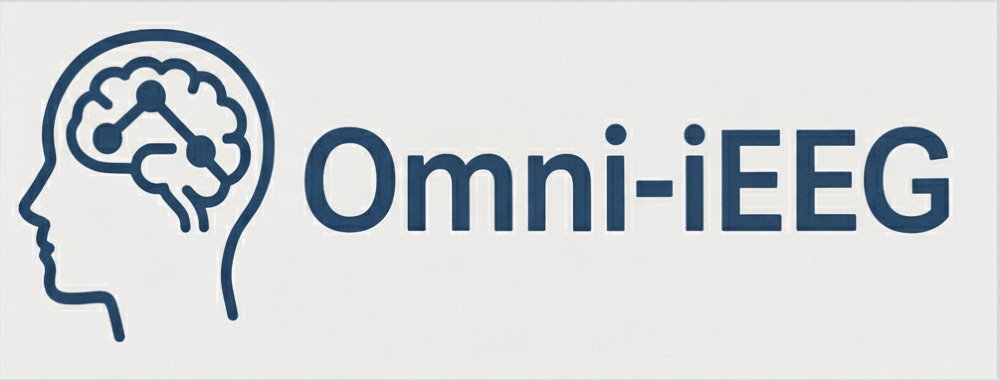

iEEG Research @ UCLA Roychowdhury Lab | Bridging AI and Neuroscience
- Self-Supervised Distillation of Legacy Rule-Based Methods for Enhanced EEG-Based Decision-MakingYipeng Zhang, Yuanyi Ding, Chenda Duan, Atsuro Daida, Hiroki Nariai, and Vwani RoychowdhuryInternational Conference on Medical Image Computing and Computer Assisted Intervention (MICCAI) , 2025
High-frequency oscillations (HFOs) in intracranial Electroencephalography (iEEG) are critical biomarkers for localizing the epileptogenic zone in epilepsy treatment. However, traditional rule-based detectors for HFOs suffer from unsatisfactory precision, producing false positives that require time-consuming manual review. Supervised machine learning approaches have been used to classify the detection results, yet they typically depend on labeled datasets, which are difficult to acquire due to the need for specialized expertise. Moreover, accurate labeling of HFOs is challenging due to low inter-rater reliability and inconsistent annotation practices across institutions. The lack of a clear consensus on what constitutes a pathological HFO further challenges supervised refinement approaches. To address this, we leverage the insight that legacy detectors reliably capture clinically relevant signals despite their relatively high false positive rates. We thus propose the Self-Supervised to Label Discovery (SS2LD) framework to refine the large set of candidate events generated by legacy detectors into a precise set of pathological HFOs. SS2LD employs a variational autoencoder (VAE) for morphological pre-training to learn meaningful latent representation of the detected events. These representations are clustered to derive weak supervision for pathological events. A classifier then uses this supervision to refine detection boundaries, trained on real and VAE-augmented data. Evaluated on large multi-institutional interictal iEEG datasets, SS2LD outperforms state-of-the-art methods. SS2LD offers a scalable, label-efficient, and clinically effective strategy to identify pathological HFOs using legacy detectors.
@inproceedings{SS2LD, abbr = {MICCAI}, title = {Self-Supervised Distillation of Legacy Rule-Based Methods for Enhanced EEG-Based Decision-Making}, author = {Zhang, Yipeng and Ding, Yuanyi and Duan, Chenda and Daida, Atsuro and Nariai, Hiroki and Roychowdhury, Vwani}, booktitle = {International Conference on Medical Image Computing and Computer Assisted Intervention}, year = {2025}, pdf = {https://arxiv.org/pdf/2507.14542}, teaser = {ss2ld.png}, bibtex_show = {true} } - PyHFO 2.0: An Open-Source Platform for Deep Learning–Based Clinical High-Frequency Oscillations AnalysisYuanyi Ding, Yipeng Zhang, Chenda Duan, Atsuro Daida, Yun Zhang, Sotaro Kanai, Minjian Lu, Shaun Hussain, Richard J. Staba, Hiroki Nariai, and Vwani Roychowdhury(medRxiv) , 2025
Accurate detection and classification of high-frequency oscillations (HFOs) in electroencephalography (EEG) recordings have become increasingly important for identifying epileptogenic zones in patients with drug-resistant epilepsy. However, few open-source platforms offer comprehensive and accessible tools that integrate conventional signal processing with modern deep learning approaches for biomarker analysis. We introduce PyHFO 2.0, an enhanced platform designed for automated detection, classification, and expert annotation of neural events. PyHFO 2.0 includes three commonly used detection methods: short-term energy (STE), the Montreal Neurological Institute (MNI) approach, and a Hilbert transform-based detector. For classification, the platform incorporates deep learning models for artifact rejection, spike-associated HFO (spkHFO) detection, and epileptogenic HFO (eHFO) identification. These models are integrated with the Hugging Face ecosystem for seamless loading and can be replaced with custom-trained alternatives. Furthermore, PyHFO 2.0 features an interactive annotation interface that enables clinicians and researchers to inspect, verify, and refine automated results. The platform was validated using clinical EEG datasets from both human and rodent models of epilepsy, confirming its reliability. PyHFO 2.0 aims to simplify the use of computational neuroscience tools in both research and clinical environments by combining methodological rigor with a user-friendly graphical interface. Its scalable architecture and model integration capabilities support a range of applications in biomarker discovery, epilepsy diagnostics, and clinical decision support, bridging advanced computation and practical usability.
@article{Ding2025pyhfo2.0, abbr = {medRxiv}, author = {Ding, Yuanyi and Zhang, Yipeng and Duan, Chenda and Daida, Atsuro and Zhang, Yun and Kanai, Sotaro and Lu, Minjian and Hussain, Shaun and Staba, Richard J. and Nariai, Hiroki and Roychowdhury, Vwani}, title = {PyHFO 2.0: An Open-Source Platform for Deep Learning{\textendash}Based Clinical High-Frequency Oscillations Analysis}, elocation-id = {2025.05.09.25327327}, year = {2025}, doi = {10.1101/2025.05.09.25327327}, publisher = {Cold Spring Harbor Laboratory Press}, url = {https://www.medrxiv.org/content/early/2025/05/11/2025.05.09.25327327}, eprint = {https://www.medrxiv.org/content/early/2025/05/11/2025.05.09.25327327.full.pdf}, booktitle = {medRxiv}, selected = {true}, teaser = {Ding2025pyhfo2.0.png}, pdf = {https://www.medrxiv.org/content/10.1101/2025.05.09.25327327v1.full.pdf}, bibtex_show = {true} } - PyHFO: lightweight deep learning-powered end-to-end high-frequency oscillations analysis applicationYipeng Zhang, Lawrence Liu, Yuanyi Ding, Xin Chen, Tonmoy Monsoor, Atsuro Daida, Shingo Oana, Shaun Hussain, Raman Sankar, Aria Fallah, Cesar Santana-Gomez, Jerome Engel, Richard J Staba, William Speier, Jianguo Zhang, Hiroki Nariai, and Vwani RoychowdhuryJournal of Neural Engineering (JNE) , 2024
Objective. This study aims to develop and validate an end-to-end software platform, PyHFO, that streamlines the application of deep learning (DL) methodologies in detecting neurophysiological biomarkers for epileptogenic zones from EEG recordings.Approach. We introduced PyHFO, which enables time-efficient high-frequency oscillation (HFO) detection algorithms like short-term energy and Montreal Neurological Institute and Hospital detectors. It incorporates DL models for artifact and HFO with spike classification, designed to operate efficiently on standard computer hardware.Main results. The validation of PyHFO was conducted on three separate datasets: the first comprised solely of grid/strip electrodes, the second a combination of grid/strip and depth electrodes, and the third derived from rodent studies, which sampled the neocortex and hippocampus using depth electrodes. PyHFO demonstrated an ability to handle datasets efficiently, with optimization techniques enabling it to achieve speeds up to 50 times faster than traditional HFO detection applications. Users have the flexibility to employ our pre-trained DL model or use their EEG data for custom model training.Significance. PyHFO successfully bridges the computational challenge faced in applying DL techniques to EEG data analysis in epilepsy studies, presenting a feasible solution for both clinical and research settings. By offering a user-friendly and computationally efficient platform, PyHFO paves the way for broader adoption of advanced EEG data analysis tools in clinical practice and fosters potential for large-scale research collaborations.
@inproceedings{zhang2024pyhfo, abbr = {JNE}, title = {PyHFO: lightweight deep learning-powered end-to-end high-frequency oscillations analysis application}, author = {Zhang, Yipeng and Liu, Lawrence and Ding, Yuanyi and Chen, Xin and Monsoor, Tonmoy and Daida, Atsuro and Oana, Shingo and Hussain, Shaun and Sankar, Raman and Fallah, Aria and Santana-Gomez, Cesar and Engel, Jerome and Staba, Richard J and Speier, William and Zhang, Jianguo and Nariai, Hiroki and Roychowdhury, Vwani}, booktitle = {Journal of Neural Engineering}, volume = {21}, number = {3}, pages = {036023}, year = {2024}, publisher = {IOP Publishing}, doi = {10.1088/1741-2552/ad4916}, pmid = {38722308}, pmcid = {PMC11135143}, selected = {true}, teaser = {Zhang2024pyhfo.png}, pdf = {https://pmc.ncbi.nlm.nih.gov/articles/PMC11135143/pdf/jne_21_3_036023.pdf}, bibtex_show = {true} } - Discovering Neurophysiological Characteristics of Pathological High-Frequency Oscillations in Epilepsy with an Explainable Deep Generative ModelYipeng Zhang, Atsuro Daida, Lawrence Liu, Naoto Kuroda, Yuanyi Ding, Shingo Oana, Tonmoy Monsoor, Shaun A. Hussain, Joe X Qiao, Noriko Salamon, Aria Fallah, Myung Shin Sim, Raman Sankar, Richard J. Staba, Jerome Engel, Eishi Asano, Vwani Roychowdhury, and Hiroki NariaimedRxiv (medRxiv) , 2024
Interictal high-frequency oscillation (HFO) is a promising biomarker of the epileptogenic zone (EZ). However, objective definitions to distinguish between pathological and physiological HFOs have remained elusive, impeding HFOs’ clinical applications. We employed self-supervised deep generative variational autoencoders to learn such discriminative HFO features directly from their morphologies in a data-driven manner. We studied a large retrospective cohort of 185 patients who underwent intracranial monitoring and analyzed 686,410 candidate HFO events collected from 18,265 brain contacts across diverse brain regions. The model automatically clustered HFOs into distinct morphological groups in the latent space. One cluster consisted of putative morphologically defined pathological HFOs (mpHFOs): HFOs in that cluster were observed to be associated with spikes and exhibited high signal intensity both in the HFO band (>80 Hz) at detection and in the sub-HFO band (10-80 Hz) surrounding the detection and were primarily localized in the seizure onset zone (SOZ). Moreover, resection of brain regions based on a higher prevalence of interictal mpHFOs better predicted postoperative seizure outcomes than current clinical standards based on SOZ removal. Our self-supervised, explainable, deep generative model distills pathological HFOs and thus potentially helps delineate the EZ purely from interictal intracranial EEG data.
@inproceedings{Zhang2024discovering, abbr = {medRxiv}, author = {Zhang, Yipeng and Daida, Atsuro and Liu, Lawrence and Kuroda, Naoto and Ding, Yuanyi and Oana, Shingo and Monsoor, Tonmoy and Hussain, Shaun A. and Qiao, Joe X and Salamon, Noriko and Fallah, Aria and Sim, Myung Shin and Sankar, Raman and Staba, Richard J. and Engel, Jerome and Asano, Eishi and Roychowdhury, Vwani and Nariai, Hiroki}, title = {Discovering Neurophysiological Characteristics of Pathological High-Frequency Oscillations in Epilepsy with an Explainable Deep Generative Model}, elocation-id = {2024.07.10.24310189}, year = {2024}, doi = {10.1101/2024.07.10.24310189}, publisher = {Cold Spring Harbor Laboratory Press}, url = {https://www.medrxiv.org/content/early/2024/07/11/2024.07.10.24310189}, eprint = {https://www.medrxiv.org/content/early/2024/07/11/2024.07.10.24310189.full.pdf}, booktitle = {medRxiv}, selected = {true}, teaser = {Zhang2024discovering.png}, pdf = {https://www.medrxiv.org/content/10.1101/2024.07.10.24310189v1.full.pdf}, bibtex_show = {true} } - Optimizing detection and deep learning-based classification of pathological high-frequency oscillations in epilepsyTonmoy Monsoor, Yipeng Zhang, Atsuro Daida, Shingo Oana, Qiujing Lu, Shaun A. Hussain, Aria Fallah, Raman Sankar, Richard J. Staba, William Speier, Vwani Roychowdhury, and Hiroki NariaiClinical Neurophysiology (Clin. Neurophysiol.) , 2023
Objective This study aimed to explore sensitive detection methods for pathological high-frequency oscillations (HFOs) to improve seizure outcomes in epilepsy surgery. Methods We analyzed interictal HFOs (80–500 Hz) in 15 children with medication-resistant focal epilepsy who underwent chronic intracranial electroencephalogram via subdural grids. The HFOs were assessed using the short-term energy (STE) and Montreal Neurological Institute (MNI) detectors and examined for spike association and time–frequency plot characteristics. A deep learning (DL)-based classification was applied to purify pathological HFOs. Postoperative seizure outcomes were correlated with HFO-resection ratios to determine the optimal HFO detection method. Results The MNI detector identified a higher percentage of pathological HFOs than the STE detector, but some pathological HFOs were detected only by the STE detector. HFOs detected by both detectors had the highest spike association rate. The Union detector, which detects HFOs identified by either the MNI or STE detector, outperformed other detectors in predicting postoperative seizure outcomes using HFO-resection ratios before and after DL-based purification. Conclusions HFOs detected by standard automated detectors displayed different signal and morphological characteristics. DL-based classification effectively purified pathological HFOs. Significance Enhancing the detection and classification methods of HFOs will improve their utility in predicting postoperative seizure outcomes.
@inproceedings{MONSOOR2023129, abbr = {Clin. Neurophysiol.}, title = {Optimizing detection and deep learning-based classification of pathological high-frequency oscillations in epilepsy}, booktitle = {Clinical Neurophysiology}, volume = {154}, pages = {129-140}, year = {2023}, issn = {1388-2457}, doi = {https://doi.org/10.1016/j.clinph.2023.07.012}, url = {https://www.sciencedirect.com/science/article/pii/S1388245723006971}, author = {Monsoor, Tonmoy and Zhang, Yipeng and Daida, Atsuro and Oana, Shingo and Lu, Qiujing and Hussain, Shaun A. and Fallah, Aria and Sankar, Raman and Staba, Richard J. and Speier, William and Roychowdhury, Vwani and Nariai, Hiroki}, keywords = {HFO, STE, MNI, Machine learning, Deep learning}, selected = {true}, teaser = {MONSOOR2023129.png}, pdf = {https://www.sciencedirect.com/science/article/pii/S1388245723006971}, bibtex_show = {true} } - Characterizing physiological high-frequency oscillations using deep learningYipeng Zhang, Hoyoung Chung, Jacquline P Ngo, Tonmoy Monsoor, Shaun A Hussain, Joyce H Matsumoto, Patricia D Walshaw, Aria Fallah, Myung Shin Sim, Eishi Asano, Raman Sankar, Richard J Staba, Jerome Engel, William Speier, Vwani Roychowdhury, and Hiroki NariaiJournal of Neural Engineering (JNE) , 2022
Objective: Intracranially-recorded interictal high-frequency oscillations (HFOs) have been proposed as a promising spatial biomarker of the epileptogenic zone. However, HFOs can also be recorded in the healthy brain regions, which complicates the interpretation of HFOs. The present study aimed to characterize salient features of physiological HFOs using deep learning (DL). Methods: We studied children with neocortical epilepsy who underwent intracranial strip/grid evaluation. Time-series EEG data were transformed into DL training inputs. The eloquent cortex (EC) was defined by functional cortical mapping and used as a DL label. Morphological characteristics of HFOs obtained from EC (ecHFOs) were distilled and interpreted through a novel weakly supervised DL model. Results: A total of 63,379 interictal intracranially-recorded HFOs from 18 children were analyzed. The ecHFOs had lower amplitude throughout the 80–500 Hz frequency band around the HFO onset and also had a lower signal amplitude in the low frequency band throughout a one-second time window than non-ecHFOs, resembling a bell-shaped template in the time-frequency map. A minority of ecHFOs were HFOs with spikes (22.9%). Such morphological characteristics were confirmed to influence DL model prediction via perturbation analyses. Using the resection ratio (removed HFOs/detected HFOs) of non-ecHFOs, the prediction of postoperative seizure outcomes improved compared to using uncorrected HFOs (area under the ROC curve of 0.82, increased from 0.76). Interpretation: We characterized salient features of physiological HFOs using a DL algorithm. Our results suggested that this DL-based HFO classification, once trained, might help separate physiological from pathological HFOs, and efficiently guide surgical resection using HFOs. Keywords: HFO, physiological HFO, machine learning
@inproceedings{zhang2022characterizing, abbr = {JNE}, title = {Characterizing physiological high-frequency oscillations using deep learning}, author = {Zhang, Yipeng and Chung, Hoyoung and Ngo, Jacquline P and Monsoor, Tonmoy and Hussain, Shaun A and Matsumoto, Joyce H and Walshaw, Patricia D and Fallah, Aria and Sim, Myung Shin and Asano, Eishi and Sankar, Raman and Staba, Richard J and Engel, Jerome and Speier, William and Roychowdhury, Vwani and Nariai, Hiroki}, booktitle = {Journal of Neural Engineering}, volume = {19}, number = {6}, pages = {10.1088/1741-2552/aca4fa}, year = {2022}, publisher = {IOP Publishing}, doi = {10.1088/1741-2552/aca4fa}, pmid = {36541546}, pmcid = {PMC10364130}, selected = {true}, teaser = {zhang2022characterizing.png}, pdf = {https://pmc.ncbi.nlm.nih.gov/articles/PMC10364130/}, bibtex_show = {true} } - Refining epileptogenic high-frequency oscillations using deep learning: a reverse engineering approachYipeng Zhang, Qiujing Lu, Tonmoy Monsoor, Shaun A Hussain, Joe X Qiao, Noriko Salamon, Aria Fallah, Myung Shin Sim, Eishi Asano, Raman Sankar, Richard J Staba, Jerome Engel, William Speier, Vwani Roychowdhury, and Hiroki NariaiBrain Communications (Brain Commun) , 2021
Intracranially recorded interictal high-frequency oscillations have been proposed as a promising spatial biomarker of the epileptogenic zone. However, its visual verification is time-consuming and exhibits poor inter-rater reliability. Furthermore, no method is currently available to distinguish high-frequency oscillations generated from the epileptogenic zone (epileptogenic high-frequency oscillations) from those generated from other areas (non-epileptogenic high-frequency oscillations). To address these issues, we constructed a deep learning-based algorithm using chronic intracranial EEG data via subdural grids from 19 children with medication-resistant neocortical epilepsy to: (i) replicate human expert annotation of artefacts and high-frequency oscillations with or without spikes, and (ii) discover epileptogenic high-frequency oscillations by designing a novel weakly supervised model. The ‘purification power’ of deep learning is then used to automatically relabel the high-frequency oscillations to distill epileptogenic high-frequency oscillations. Using 12 958 annotated high-frequency oscillation events from 19 patients, the model achieved 96.3% accuracy on artefact detection (F1 score = 96.8%) and 86.5% accuracy on classifying high-frequency oscillations with or without spikes (F1 score = 80.8%) using patient-wise cross-validation. Based on the algorithm trained from 84 602 high-frequency oscillation events from nine patients who achieved seizure-freedom after resection, the majority of such discovered epileptogenic high-frequency oscillations were found to be ones with spikes (78.6%, P < 0.001). While the resection ratio of detected high-frequency oscillations (number of resected events/number of detected events) did not correlate significantly with post-operative seizure freedom (the area under the curve = 0.76, P = 0.06), the resection ratio of epileptogenic high-frequency oscillations positively correlated with post-operative seizure freedom (the area under the curve = 0.87, P = 0.01). We discovered that epileptogenic high-frequency oscillations had a higher signal intensity associated with ripple (80–250 Hz) and fast ripple (250–500 Hz) bands at the high-frequency oscillation onset and with a lower frequency band throughout the event time window (the inverted T-shaped), compared to non-epileptogenic high-frequency oscillations. We then designed perturbations on the input of the trained model for non-epileptogenic high-frequency oscillations to determine the model’s decision-making logic. The model confidence significantly increased towards epileptogenic high-frequency oscillations by the artificial introduction of the inverted T-shaped signal template (mean probability increase: 0.285, P < 0.001), and by the artificial insertion of spike-like signals into the time domain (mean probability increase: 0.452, P < 0.001). With this deep learning-based framework, we reliably replicated high-frequency oscillation classification tasks by human experts. Using a reverse engineering technique, we distinguished epileptogenic high-frequency oscillations from others and identified its salient features that aligned with current knowledge.
@inproceedings{ehfo, abbr = {Brain Commun}, title = {Refining epileptogenic high-frequency oscillations using deep learning: a reverse engineering approach}, author = {Zhang, Yipeng and Lu, Qiujing and Monsoor, Tonmoy and Hussain, Shaun A and Qiao, Joe X and Salamon, Noriko and Fallah, Aria and Sim, Myung Shin and Asano, Eishi and Sankar, Raman and Staba, Richard J and Engel, Jerome and Speier, William and Roychowdhury, Vwani and Nariai, Hiroki}, booktitle = {Brain Communications}, volume = {4}, number = {1}, pages = {fcab267}, year = {2021}, month = nov, issn = {2632-1297}, doi = {10.1093/braincomms/fcab267}, selected = {true}, teaser = {ehfo.png}, pdf = {https://academic.oup.com/braincomms/article-pdf/4/1/fcab267/42472013/fcab267.pdf}, bibtex_show = {true} }